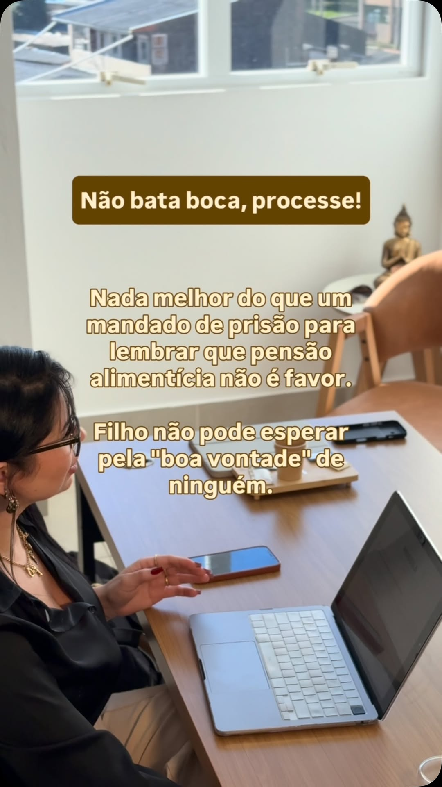

1
Primeiro contato
Você descreve a situação por WhatsApp ou telefone. Nessa etapa eu avalio se o caso é da minha área de atuação.
Atuação em direito de família, empresarial, civil e tributário. Atendimento presencial no escritório em Canoas e virtual para quem está em outra cidade.
Canoas · atendimento presencial e on-line
Você descreve a situação por WhatsApp ou telefone. Nessa etapa eu avalio se o caso é da minha área de atuação.
Conversa presencial no escritório em Canoas ou por vídeo, para entender os fatos e ver os documentos que já existem.
Explico os caminhos possíveis, os riscos, os prazos reais e os custos envolvidos antes de você decidir qualquer coisa.
Definida a estratégia, você acompanha o andamento e recebe retorno a cada movimentação relevante do processo ou da negociação.
Respostas de caráter informativo. Cada situação tem particularidades que só a análise do caso concreto revela.
Pode. Na execução de alimentos pelo rito da prisão civil, o devedor é intimado para, em três dias, pagar, provar que pagou ou justificar a impossibilidade. Se não faz nada disso, o juiz pode decretar prisão civil de um a três meses, cumprida em regime fechado. A prisão não apaga a dívida: o valor continua devido e pode ser cobrado também por penhora e protesto.
O combinado verbal ou por mensagem não tem força de título executivo. Se o pagamento parar, não dá para executar direto: seria preciso ajuizar ação de alimentos e discutir o valor do zero. Quando o acordo é homologado pelo juiz, feito por escritura pública ou referendado pelos advogados das partes, ele vira título e pode ser cobrado na Justiça.
Depende do caminho. O divórcio consensual pode ser feito por escritura pública em cartório, sempre com advogado, quando as partes concordam e as questões sobre filhos menores já foram resolvidas judicialmente. Esse caminho não depende de pauta de audiência. O divórcio litigioso corre na Justiça e segue o tempo do tribunal, variando conforme a vara e a complexidade da partilha.
Não. As normas da OAB proíbem o advogado de prometer resultado, garantir êxito ou anunciar prazo de decisão, porque quem julga é o Judiciário. O que um advogado pode e deve fazer é explicar as chances reais, os riscos, os custos e os cenários possíveis do seu caso. Promessa de causa ganha, dinheiro rápido ou custo zero é sinal de alerta.
Os honorários são combinados caso a caso e dependem da complexidade, do tempo de trabalho e da forma de cobrança, que pode ser valor fixo, por etapa ou percentual sobre o resultado. A OAB/RS publica uma tabela com valores de referência para a seccional. Custas judiciais, taxas de cartório e eventual perícia são despesas separadas dos honorários.
As duas formas. O atendimento presencial acontece no escritório, na Av. Boqueirão, 3166, sala 402, bairro Estância Velha, em Canoas - RS. Há também atendimento virtual, para quem mora em outra cidade ou prefere resolver à distância. Em qualquer um dos casos, o primeiro contato é pelo telefone e WhatsApp (51) 99595-7590.
São documentos diferentes. O contrato social é obrigatório e define o básico: objeto, capital, quotas e administração. O acordo de sócios é facultativo e trata do que costuma travar a operação depois: regra de desempate, entrada e saída de sócio, distribuição de lucros e o que acontece em caso de conflito. Sem essas regras combinadas antes, o impasse vira processo.

Sou advogada e atendo em Canoas, no Rio Grande do Sul. Meu trabalho começa antes do processo: entender o que aconteceu, o que a lei permite e qual caminho resolve o problema com menos desgaste. Nem toda situação precisa virar processo judicial, e eu digo isso na primeira conversa.
Prefiro ser clara desde o início a alimentar expectativa que a realidade não vai atender. Você vai saber os riscos, os prazos reais e os limites do seu caso antes de decidir qualquer coisa. Sem promessa de resultado e sem pressa artificial.
Se você quer entender qual é o caminho para o seu caso, o contato pode ser feito por WhatsApp ou telefone, no (51) 99595-7590.
Av. Boqueirão, 3166 - Sl 402 - Estância Velha, Canoas - RS, 92440-002